Rev09 requirements specification with Revision 5.1 simulation supplement
FDS-001 Revision 0.9, 10 November 2026. All original text, tables and illustrations retained; simulation assumptions, calculations and sources added 15 November 2026 in labeled subsections. Historical labels and unresolved conflicts remain identified in the source. The Revision 5.1 integration register explains their status.
FREYA Mission Vehicle Design Specification
late 2028 Precursor Vehicle (Configuration A) | 2031 Science Vehicles (Configuration B)
Design leadership: Dr. Robert Zubrin (Lead) | Dr. Robert Mills (Engineering)
Document FDS-001 • Revision 0.9 • 10 November 2026 • Preliminary engineering design baseline
Design maturity: concept / pre-PDR. Values marked assumed are sizing allocations, not qualified flight performance.
1. Purpose, scope and design authority
This specification covers mission-level, vehicle, deorbit, entry, descent, probe deployment, surface science, verification and program interfaces. It is a proposed controlled baseline, not a flight-qualified design. “Established” denotes a recent project decision; “Proposed” denotes a derived requirement requiring approval; all unresolved numerical fields are now explicit preliminary assumptions, not approved flight limits. Each numbered requirement is independently verifiable where practical. A = precursor; B = 2031 mission.
Precedence: latest November 9 configuration overrides earlier 350 mm upper-shell geometry, foam carrier descriptions, horizontal probe packaging, and cold-gas A architecture. The latest 600 mm dimension is interpreted as assembled aeroshell height, pending a dimensioned drawing. Mass statements of 15 kg aeroshell and 20 kg at burn conflict with earlier 16 kg allocation and require explicit reconciliation.
2. Vehicle architecture and configuration definition
| Parameter | A: late 2028 | B: 2031 |
|---|---|---|
| Flight configuration | 1 aeroshell; 3 probes | 2 aeroshells; 7 probes each |
| Probe geometry | 200 mm length; 50 mm main diameter; 75 mm upper shoulder | Identical 200 x 50 mm probe body with 75 mm upper shoulder; seven vertical positions per PCM; science fit assumed |
| Probe mass | 2.00 kg each; 6 kg total | 2.00 kg each; 14 kg per vehicle; 28 kg total |
| Aeroshell | 800 mm diameter; 600 mm total height (latest, verify) | 0.80 m outside diameter x 0.60 m assembled height; same 70 mm lower-to-upper transition; packaging requires CAD verification |
| Shell material | Ablative lower heat shield; aluminum upper shell | Ablative lower heat shield plus insulated aluminum-alloy upper shell; initial TPS allocation 5.0 kg per vehicle; thermal qualification required |
| Probe stowage | Vertical in PCM | Seven probes vertical in one PCM; 2 rows of 3 plus central seventh; assumed 20 mm radial mechanism clearance, subject to CAD |
| Deorbit | Single J-class solid motor; 4 reaction wheels | Baseline scaled solid deorbit propulsion with four reaction wheels; N2O/paraffin hybrid plus shared-gas ACS retained as alternative trade |
| Release orbit | ~300 km Mars orbit, design reference | 300 km nominal circular Mars parking orbit; assumed 50 km vacuum periapsis proxy for preliminary deorbit sizing |
| Parachutes | PCM 1.5 m; individual probe 0.5 m | PCM 2.0 m nominal; individual probe 0.5 m; all deployment loads and speeds require qualification |
| Mass | 20 kg at burn, including 6 kg probes; 15 kg interpreted as approximate entry assembly rather than shell-only mass | 50 kg at burn per aeroshell, 100 kg for two; 20 kg of 120 kg reported rideshare allowance reserved for shared interfaces/adapter |
3. Design assumptions and numerical baseline
| Parameter | Assumption | Applies | Status / caveat |
|---|---|---|---|
| Reference Mars orbit | 300 km circular, equatorial example | Both | Assumed; launch provider orbit not confirmed |
| Mars gravitational parameter | 42,828 km^3/s^2 | Both | Standard approximate value |
| Mars mean radius | 3,389.5 km | Both | Spherical approximation |
| Atmospheric interface | 125 km altitude for illustrative calculations | Both | Not a qualified entry interface |
| Entry target periapsis | 50 km altitude (two-body proxy) | Both | Not a physical atmospheric entry trajectory |
| A mass at deorbit | 20 kg wet, including 6 kg probes | A | Working constraint; inconsistent with 15 kg aeroshell if that means dry shell |
| B mass at deorbit | 50 kg per vehicle, 100 kg total | B | New planning assumption, not allocation |
| Aeroshell diameter | 0.80 m | Both | B commonality assumed, subject to packaging |
| Aeroshell total height | 0.60 m | A | Latest project instruction |
| B aeroshell height | 0.60 m candidate | B | Common architecture assumption; fit check needed |
| Probe diameter / length | 50 mm body, 75 mm shoulder / 200 mm | Both | Established |
| Probe parachute diameter | 0.50 m nominal | Both | Established concept, not verified |
| PCM chute diameter | 1.50 m A / 2.00 m B | Both | Concept only; may require redesign |
| Mars air density for chute example | 0.015 kg/m^3 near surface | Both | Variable with site, season, elevation |
| Parachute effective drag coefficient | Cd=0.75 assumed | Both | Not measured |
| Target landed operation | 24 h A / 72 h B minimum goal | Both | Proposed; energy budget required |
| Science return | Health + engineering A; controls + science B | Both | Proposed science acceptance split |
The following are analytical planning assumptions, not demonstrated performance or approved flight limits. Values are preliminary assumptions for first-pass trade studies. Each requires validation and change control before preliminary design review.
3.1 Revision 5.1 simulation assumptions and authority
This supplement records the implemented simulation model as of 15 November 2026. FDS-001 Rev0.9 remains the governing baseline. The supplement adds explicit analysis assumptions and software requirements; it does not select flight hardware or close the original qualification gates. Original source text, figures and numbered requirements are retained. Original statements about the earlier browser-only simulator describe that earlier implementation; this supplement governs the added calculated-flight panel.
Authority: Rev09 supplies the A/B wet masses, probe counts, geometry, nominal canopy sizes, 300 km orbit, 50 km vacuum-periapsis proxy, and 25% delta-v planning allowance [SIM-R1]. The user requested attitude-jet separation, heat-shield-forward alignment followed by main-engine firing, gas-versus-tank accounting, a 3–20 orbit targeting search, A/B engine calculations, center/shoulder temperatures, and every-step descent outputs on 15 November 2026 [SIM-R2]. The 10-slide FREYA presentation supplies the phase ordering and proposed science alternatives [SIM-R3].
All other values below are engineering trade assumptions unless attributed to Rev09. NASA sources support the stated physical relations, not the FREYA engine performance, tank selection, parachute qualification, material constants or target accuracy. The separate Freya Pathfinder Aeolus 2028 reference is excluded.
Mass boundaries: total wet mass includes initial cold gas and main propellant. Conservative separation/alignment gas demand including pulse allowance is removed before ignition. Module dry mass and remaining cold gas are removed before atmospheric entry. Carrier retained dry mass includes its retained chute and electronics; each 2 kg probe includes its own chute. Entry mass minus loaded carrier mass is the discarded shell/TPS/remaining hardware allocation. These assumed partitions require component-level closure against Section 6. No additional mass is added on top of wet mass for a reserve.
| Parameter | Value / interpretation |
|---|---|
| Environment | Spherical Mars, R=3,389,500 m; μ=4.2828×10^13 m³/s²; sidereal rotation period 88,642.6848 s; g0=9.80665 m/s². Rounded screening constants retained; not an ephemeris solution. |
| Orbit / target | 300 km circular orbit, 50 km vacuum-periapsis proxy, 125 km entry interface; 30° inclination; initial argument and longitude 0°; target latitude/longitude 0°/0°. Search from 3 through 20 elapsed orbits. Tolerance 100 km by default in this shared comparison; Rev09 A/B source goals remain 100/50 km. |
| A propulsion | Fixed rectangular thrust 100 N, total impulse 1,280 N s, assumed Isp 225 s. No vendor motor or measured thrust curve is specified. Full burn, no arbitrary solid-motor cutoff. |
| B propulsion | Hybrid trade alternative: burn time 12.8 s; assumed Isp 250 s; oxidizer/fuel mass ratio 4.0; paraffin / N2O concept. Required thrust is solved. Scaled-solid versus hybrid architecture remains open. |
| Cold gas | Separate N2 supply; 6 conceptual jets, each 0.1 N; balanced pairs for translation and torque; lever 0.25 m; Isp 65 s; inertia A/B 1.5/3.75 kg m²; separation Δv 0.2 m/s; 20 m clearance; 90° rest-to-rest slew; 20% consumption allowance. |
| Tank | 1.0 L internal volume, 200 bar absolute initial, 20 bar absolute minimum, 293 K, R_N2=296.8 J/(kg K), ideal-gas approximation; default leakage 0%/day. Pressure vessel/regulator mass is part of the module allocation. Not a selected or qualified tank. |
| Atmosphere / entry | ρ(h)=0.015 exp(−h/11,000) kg/m³; h in m; zero lift; Cd=1.5, 0.8 m shell diameter; atmosphere corotates with Mars projected into the orbital plane. Constant exponential atmosphere is an assumption, not a Mars weather model. |
| Discard / retained masses | External dry module A/B 1.5/3.0 kg; retained dry carrier A/B 3.0/8.0 kg. Entry masses and mass differences are calculated, not measured. |
| Descent | Extraction at 10,000 m above flat ground; first probe release at 5,000 m; subsequent releases every 2 s; carrier canopy starts inflating after 1 s and reaches full area over 2 s. Probe delay 1.5 s, then 2 s inflation; Cd=0.75, carrier canopy A/B 1.5/2.0 m, probe canopy 0.5 m; wind 0 m/s. |
| Thermal material proxy | Density 250 kg/m³; cp 1,200 J/(kg K); k 0.15 W/(m K); total thickness 0.015 m; surface layer 0.002 m; emissivity 0.85; initial/background temperature 210 K. These generic constants do not identify SLA-561V or PICA. |
| Thermal shape proxy | Center nose radius 0.20 m (assumed); shoulder local radius 0.07 m (Rev09 contour reference used as proxy); shoulder flow multiplier 0.45 (assumed). Side-radius temperature means shoulder surface temperature. |
| Integration / playback | RK4: main burn 0.05 s, vacuum coast 1 s, entry 0.25 s, descent 0.25 s; thermal explicit substeps ≤0.025 s. Step is shortened at altitude, release and ground events. Physical phase intervals have equal compressed playback length; displayed mission time is real elapsed seconds. |
4. Mission operations and host interface
4.1 Simulation sequence and physical event timing
The physical sequence is paired-jet separation, clearance coast, orbital opportunity search, attitude alignment, ignition, complete main-engine burn, external-module discard, passive coast, shield-forward atmospheric entry, cover/chute/carrier extraction, individual probe releases, overlapping probe/carrier descents, impact and later proposed science/data return. The seven delivery phases from presentation slide 7 remain in the separate presentation walkthrough.
After the 90° alignment, the shield outward normal is parallel to the forward velocity/reentry trajectory. Main-engine thrust is antiparallel to velocity; exhaust exits forward from the external module ahead of the shield. This is a schematic mounting assumption requiring plume and TPS-interface validation. The module is discarded five seconds after cutoff; no active cold-gas credit is taken after discard. The animation uses a balanced-pair attitude maneuver. It does not demonstrate full six-axis controllability.
Orbital dwell lasts until the selected search opportunity. The model neglects the small orbital perturbation due to the 0.2 m/s separation maneuver and omits active station keeping during the dwell. Alignment completes five seconds before ignition. Navigation and ignition gates in GNC-004/GNC-06 remain mandatory; the simulator does not model sensor confidence or authorize ignition.
Physical-flight time starts at separation command. The presentation walkthrough retains a separate synthetic review clock and conceptual science timing. Science counts, life detection, relay reception, soil penetration and survival are not generated by the flight solver.
| Event | A elapsed seconds | B elapsed seconds |
|---|---|---|
| Host clearance | 110.00 | 125.00 |
| Alignment starts | 85,816.20 | 41,279.52 |
| Main ignition | 85,834.93 | 41,306.23 |
| Main cutoff | 85,847.73 | 41,319.03 |
| External module detached | 85,852.73 | 41,324.03 |
| 125 km interface | 87,802.26 | 43,384.21 |
| 10 km carrier extraction | 88,526.22 | 44,225.17 |
| Last probe impact | 88,635.12 | 44,331.05 |
| Carrier reaches ground | 88,706.01 | 44,371.87 |
5. Subsystem design descriptions and interface constraints
Mission and interfaces
MIS-001 [A] The mission shall deliver three independent 2.00 kg probes to the Martian surface. (Established)
MIS-002 [B] The mission shall deliver two independent aeroshell vehicles, each carrying seven 2.00 kg probes. (Established)
MIS-003 [Both] Each vehicle shall remain mechanically and electrically compatible with the approved host upper-stage separation interface. (Proposed)
MIS-004 [Both] Each vehicle shall execute a defined separation, orbit determination, deorbit, entry, descent and probe-release sequence. (Proposed)
MIS-005 [Both] The mission shall document allowable launch, cruise, orbit and atmospheric entry environments before design freeze. (Proposed)
MIS-006 [Both] The mission shall define target landing regions, delivery dispersion and science-site acceptance criteria. (Proposed assumption; verify by analysis and test) Planning baseline: Assume an initial 100 km-radius target region for A and 50 km-radius for each B vehicle, with 95% of Monte Carlo landings within the respective region; exclude scientifically prohibited terrain.
MIS-007 [Both] The program shall maintain independent mass, power, volume, thermal and delta-v budgets with margins approved at PDR. (Proposed)
MIS-008 [Both] The flight system shall implement autonomous safe-state and abort/inhibit logic for premature motor ignition and pyrotechnic deployment. (Proposed)
Geometry and structures
STR-001 [A] The nominal aeroshell outer diameter shall be 800 mm. (Established)
STR-002 [A] The assembled aeroshell height shall be 600 mm, subject to confirmation of datum and inclusion of the upper cover. (Established / clarify)
STR-003 [A] The lower heat shield shall retain the current baseline contour and include a nominal 70 mm radius transition to the upper-shell profile. (Established / drawing needed)
STR-004 [A] The upper shell shall use aluminum alloy; grade, thickness, insulation and joint design shall be selected by structural and aerothermal analysis. (Established / derived)
STR-005 [A] The lower heat shield shall use a qualified ablative thermal-protection system, with material and thickness verified for the orbital-entry trajectory. (Proposed)
STR-006 [Both] The carrier and all stowed probes shall fit within the aeroshell with verified deployment clearance and launch-load restraint. (Proposed)
STR-007 [A] The upper cover opening shall provide unobstructed passage of the loaded probe carrier during ejection. (Established)
STR-008 [Both] The aeroshell shall withstand launch, separation, deorbit, entry and deployment load cases with documented positive structural margins. (Proposed)
STR-009 [Both] All attachments across the heat shield shall preserve TPS integrity; sacrificial external DOM connections shall not require through-holes in the heat shield. (Established / derived)
Deorbit and guidance
GNC-001 [A] The deorbit module shall use one J-class solid rocket motor in the baseline configuration. (Established)
GNC-002 [A] The vehicle shall provide four reaction wheels for attitude control, with wheel-axis geometry and independent controllability verified. (Established / verify)
GNC-003 [A] The attitude solution shall fuse inertial MEMS gyro measurements with camera-derived Mars limb or feature observations and available Sun observations. (Proposed)
GNC-004 [Both] The vehicle shall inhibit deorbit firing unless attitude, estimated orbit state, predicted entry corridor and propulsion readiness satisfy approved limits. (Proposed)
GNC-005 [Both] The deorbit propulsion system shall provide the trajectory-specific required impulse and delta-v with defined dispersions and margin. (Proposed assumption; verify by analysis and test) Planning baseline: For the assumed 300 km orbit and 50 km vacuum-periapsis proxy, use 60.3 m/s ideal delta-v, with 25% planning margin (75.4 m/s). At 50 kg B wet mass, the impulse-equivalent planning value is 3.77 kN s; actual delivered impulse must be calculated with rocket equation and a motor thrust curve.
GNC-006 [A] The sacrificial DOM shall mount beneath the heat shield without compromising the thermal-protection barrier. (Established)
GNC-007 [B] The hybrid-engine trade shall evaluate paraffin fuel, N2O oxidizer, tankage, feed system and ignition against the A solid-motor architecture. (Proposed)
GNC-008 [B] If selected, the cold-gas attitude system shall include all thrusters, valves, plumbing, regulator and usable N2O/N2 gas mass in the budget. (Proposed)
GNC-009 [Both] Attitude control shall account for momentum buildup, wheel saturation, deorbit disturbances and the absence or availability of desaturation actuators. (Proposed)
GNC-010 [Both] Orbit and attitude estimation shall demonstrate observability during camera occultation, low-light conditions and changing Mars viewing geometry. (Proposed)
Entry and descent
EDL-001 [A] The reference entry trajectory shall originate from approximately 300 km Mars orbit; actual entry interface and flight-path angle shall be determined by trajectory design. (Established / derived)
EDL-002 [Both] The aeroshell shall maintain a thermally and dynamically acceptable entry attitude throughout peak heating and deceleration. (Proposed)
EDL-003 [Both] TPS sizing shall use trajectory-dependent convective and radiative heating, heat soak, ablation and aluminum-shell temperature limits. (Proposed)
EDL-004 [Both] Parachute deployment shall occur only within verified Mach number, dynamic pressure and altitude envelopes. (Proposed)
EDL-005 [A] The PCM recovery parachute shall have nominal 1.5 m diameter, pending Mars deployment and descent qualification. (Established / verify)
EDL-006 [B] The PCM recovery parachute shall use the 2.0 m candidate diameter pending vehicle-level mass and deployment analysis. (Proposed)
EDL-007 [Both] The system shall safely separate the heat shield and upper cover in the commanded sequence without collision with the PCM or probes. (Proposed)
EDL-008 [Both] The descent system shall determine probe release altitude using a qualified sensing and estimation method with defined uncertainty. (Proposed)
EDL-009 [Both] Each probe shall deploy a nominal 0.5 m parachute, subject to terminal-speed and stability verification. (Established / verify)
EDL-010 [Both] The EDL analysis shall account for the low density and variability of the Martian atmosphere, winds, and landing-site elevation. (Proposed)
Probe carrier and deployment
PCM-001 [A] The PCM shall restrain three probes in vertical stowage until commanded release. (Established)
PCM-002 [B] Each PCM shall restrain seven probes in vertical stowage until commanded release. (Established probe count; assumed packaging envelope) Planning baseline: Assume seven vertically stowed probes in a 3+3+1 arrangement. Verify fit inside the 800 mm diameter shell with a CAD swept-volume extraction study and positive clearance at maximum tolerance.
PCM-003 [Both] The PCM shall release probes individually, without mechanical interference, following an altitude-gated release schedule. (Established / derived)
PCM-004 [Both] The PCM shall remain retained through entry until its extraction conditions are met. (Proposed)
PCM-005 [Both] The carrier ejection system shall demonstrate cover clearance, parachute extraction and no contact with critical spacecraft elements. (Proposed)
PCM-006 [Both] Any pyrotechnic separation device shall have independent electrical inhibits and ground-safe handling provisions. (Proposed)
PCM-007 [Both] Release sequencing shall provide an adjustable interval and shall be validated against descent rate, wind drift and probe separation. (Proposed)
Probe and science
PRB-001 [Both] Each probe shall have a nominal overall length of 200 mm and main-body diameter of 50 mm. (Established)
PRB-002 [Both] Each probe shall include an upper shoulder of nominal 75 mm diameter over approximately the upper third of its length. (Established)
PRB-003 [Both] Each probe flight mass shall be 2.00 kg including science payload, power, structure, radio, parachute and consumables. (Established)
PRB-004 [Both] Each probe shall retain a pointed lower penetration head and deploy in an attitude that supports near-vertical surface penetration. (Established / derived)
PRB-005 [Both] Each probe shall provide a tether-integrated antenna connection from the center of its upper end. (Established)
PRB-006 [Both] The probe shall protect the science sample and sample pathway from contamination introduced by spacecraft materials or entry heating. (Proposed)
PRB-007 [B] The science system shall execute a documented life-detection measurement protocol with controls, blanks and decision thresholds. (Proposed)
PRB-008 [B] The science system shall obtain, transfer and analyze Martian material with demonstrated sample mass, depth, integrity and instrument sensitivity. (Proposed assumption; verify by analysis and test) Planning baseline: Assume a 0.5 g minimum collected sample from 20-100 mm below the local surface per probe, with 80% transfer efficiency and duplicate blank/control measurements. These are science-planning targets requiring laboratory validation.
PRB-009 [Both] The probe shall provide energy storage and environmental protection sufficient for the approved post-landing operating duration. (Proposed assumption; verify by analysis and test) Planning baseline: Assume 24 h A and 72 h B surface operation, with a 20% usable energy margin after temperature derating and communications duty cycle.
PRB-010 [Both] The science and communications system shall operate under defined dust deposition, temperature and illumination cases. (Proposed)
PRB-011 [Both] The probe shall demonstrate survival of the predicted impact loads across the defined regolith and ice mechanical-property envelope. (Proposed)
Communications, protection and verification
SYS-001 [Both] The mission shall define an end-to-end telecommunications path, link budget, data storage and expected data return to Earth. (Proposed assumption; verify by analysis and test) Planning baseline: Assume a Mars-orbit relay link using a UHF compatible transceiver, onboard buffering of at least 64 MB A / 256 MB B per probe, and at least 95% data retention until relay opportunity; final interoperability depends on relay provider agreement.
SYS-002 [Both] Each probe shall provide unique identification, health telemetry and time-tagged science data. (Proposed)
SYS-003 [Both] The program shall determine applicable Mars planetary-protection classification with the responsible authority before flight hardware processing. (Proposed)
SYS-004 [B] Life-detection sample-contacting hardware shall meet the approved biological contamination and recontamination prevention requirements. (Proposed)
SYS-005 [Both] The program shall maintain bidirectional traceability from mission objectives through requirements, design, test evidence and anomalies. (Proposed)
SYS-006 [Both] Each flight-critical release, ignition, attitude and descent function shall be verified by analysis and representative integrated testing. (Proposed)
SYS-007 [Both] The program shall perform thermal-vacuum, vibration, shock, deployment and impact qualification at documented environments. (Proposed)
SYS-008 [Both] The program shall approve a fault tree and hazard controls for propulsion, pressure vessels, pyrotechnics and inadvertent Mars impact. (Proposed)
6. Configuration A and B mass allocations
| Subsystem | A: late 2028 | B: 2031 per vehicle |
|---|---|---|
| Probes | 6.0 | 14.0 |
| Aeroshell structure and cover | 3.0 | 7.0 |
| Thermal protection and insulation | 2.0 | 5.0 |
| PCM, mechanisms and restraints | 1.5 | 4.0 |
| Parachutes and deployment hardware | 1.2 | 3.5 |
| Deorbit propulsion including propellant | 2.5 | 7.0 |
| GNC, avionics and power | 1.7 | 4.0 |
| Communications and harness | 0.7 | 1.5 |
| Integration / uncertainty reserve | 1.4 | 4.0 |
| TOTAL | 20.0 | 50.0 |
These allocations are intentionally constrained placeholders, not component estimates from CAD or vendor data. Reserve is included in the stated total, not added on top. No system mass closure is claimed.
7. Configuration B detailed design implementation
All values below are engineering assumptions for design closure, not verified capabilities. B comprises two independent 50 kg vehicles, each carrying seven 2.00 kg probes. Shared host allowance is assumed to be 20 kg, giving 120 kg total integrated rideshare mass. This reconciles the previously reported allocation only as a planning model.
Orbit and deorbit
300 km circular Mars orbit; 50 km vacuum-periapsis target proxy; ideal delta-v 60.3 m/s; 25% allowance gives 75.4 m/s. 50 kg initial mass gives 3.77 kN s momentum-equivalent demand. A single J-class motor is not credible for this assumed B impulse; use a qualified multi-motor solid cluster or higher-impulse system selected by trajectory and thrust-curve analysis.
Attitude control
Four reaction wheels per vehicle, 0.25 kg each provisionally, plus MEMS IMU, horizon/feature camera and Sun observation. Design for 0.02 N m s nominal wheel momentum storage each and 0.002 N m commanded torque per wheel as screening values; controllability and momentum saturation must be simulated.
Hybrid alternative
Paraffin/N2O hybrid with shared N2O tank and four cold-gas jets remains the B alternate. Provisional propulsion mass allocation 7.0 kg includes 2.0 kg usable oxidizer/pressurant and 0.5 kg paraffin; exact propellant fraction and attainable delta-v are not established and must be independently calculated.
Structure and TPS
800 mm outer diameter, 600 mm assembled aeroshell height, aluminum upper shell, ablative lower shield, 70 mm shoulder transition. Per-vehicle allocation: 7.0 kg shell/cover and 5.0 kg TPS/insulation. These are mass allowances, not demonstrated thermal thicknesses.
PCM and descent
Seven vertical probe channels, nominal 2.0 m PCM canopy, nominal 0.5 m individual probe canopies; assumed 2-second staggered release with altitude gate. A 2 m canopy alone cannot be presumed to give a safe Mars descent speed; descent performance is a mandatory redesign/qualification gate.
Surface science
Seven 2 kg probes per vehicle; assumed 0.5 g collected sample each at 20-100 mm depth; 72 h nominal operations; paired blanks and positive controls; instrument sensitivity to be established with science validation, not inferred from mass.
Power and data
Per probe assumed 20 Wh usable stored energy, 0.20 W average load (72 h = 14.4 Wh), with 5.6 Wh remaining for contingencies and peaks. Relay-oriented UHF architecture; 256 MB data storage per probe; radio link budget to be verified against a selected orbiter.
Reliability and verification
Assume 95% minimum successful probe release per vehicle in test campaigns, and verify individual deployment, impact survival, science operation and end-to-end communications. Flight-level mission reliability cannot be claimed from these screening targets.
7A. Added design requirements - GNC, entry loads and mission status telemetry
Applicability: Configuration A (late 2028) is the immediate implementation baseline. Configuration B (2031) shall inherit the functional requirements, with six-thruster sizing, sensor performance and radio-link design scaled and verified for its larger vehicle. These requirements are proposed engineering baselines and do not constitute flight qualification.
7A.1 Camera / MEMS / onboard ML navigation and attitude
| ID | Design requirement | Verification / acceptance evidence |
|---|---|---|
| GNC-01 | Provide calibrated camera measurements of the Mars limb/horizon, apparent disk size and identifiable large-scale surface features when visible; estimate attitude and orbital/ground-track state with uncertainty. | Hardware-in-the-loop image sequences, camera calibration and navigation-error budget. |
| GNC-02 | Observe the Sun when within the camera field of view and safe sensor exposure limits; fuse Sun-direction observations with Mars observations and inertial data. | Illumination, occultation and Sun-avoidance simulation; attitude observability analysis. |
| GNC-03 | Use a MEMS gyroscope/IMU to propagate attitude between optical observations; estimate gyro bias and bound drift when Mars and Sun are temporarily unavailable. | Sensor calibration, thermal drift tests and outage simulations. |
| GNC-04 | Run deterministic guidance, navigation and control on a Raspberry Pi-class processor, with ML-assisted Mars limb / landmark detection; safety-critical control shall not rely solely on unverified ML output. | Processor latency, worst-case execution time, fault injection and independently checked state-estimation performance. |
| GNC-05 | Control spacecraft attitude using six independently commanded cold-gas thrusters, with verified torque authority about three axes and fault-tolerant command inhibits. | Thruster geometry and torque matrix, impulse-bit, propellant budget and closed-loop simulations. |
| GNC-06 | Verify attitude and orbital-state confidence before deorbit ignition; inhibit ignition if navigation confidence, pointing error or thruster health is outside approved limits. | Monte Carlo deorbit targeting, timing, safe-mode and inhibit tests. |
| GNC-07 | Define six-thruster implementation as a proposed architecture change. Reconcile against the existing four-reaction-wheel baseline and Configuration B hybrid oxidizer / cold-gas supply; do not assume N2O thrusters share a tank without regulator, phase-state and compatibility qualification. | Signed trade study and updated P&ID, mass, power and propulsion interface control documents. |
7A.2 Reentry aerothermal and structural load management
| ID | Design requirement | Verification / acceptance evidence |
|---|---|---|
| EDL-01 | Establish the entry corridor, worst-case heating rate, integrated heat load, dynamic pressure, deceleration, aero-moments and center-of-pressure movement for dispersions in Mars atmosphere and vehicle properties. | Trajectory/CFD/aerothermal analyses with stated margins and uncertainties. |
| EDL-02 | Size and qualify the ablative heat shield, insulation and aluminum backshell for peak and integrated heat exposure; maintain internal electronics, batteries, PCM and probe temperatures within qualified limits. | Thermal network model, material response, thermal-vacuum and representative heating tests. |
| EDL-03 | Maintain positive structural margins for peak aerodynamic pressure, deceleration, vibration, thermal gradients, fastener and joint loads, including the 70 mm heat-shield-to-backshell transition. | Finite-element load cases, structural proof and coupled thermal-stress assessment. |
| EDL-04 | Ensure the external deorbit/hybrid propulsion module does not penetrate the heat shield and that sacrificial attachments cannot cause unacceptable TPS damage, destabilization or debris impact during entry. | Interface drawings, separation dynamics and TPS continuity inspection. |
| EDL-05 | Demonstrate stable heat-shield-forward entry and adequate control authority before atmospheric interface; prohibit reliance on active cold-gas control after its external hardware is sacrificed. | Six-degree-of-freedom entry stability and control-transition simulations. |
| EDL-06 | Verify cover release, parachute deployment and PCM ejection only after thermal, dynamic-pressure and deceleration conditions are inside qualified release envelopes. | Event sequencing tests, entry/descent Monte Carlo and separation tests. |
7A.3 Probe-carrier low-data-rate high-peak-power transmitter
The carrier shall maintain a nine-bit cumulative event-status word. A bit changes from 0 to 1 when the corresponding event is confirmed; bits remain latched. The transmitter shall attempt to send this nine-bit word once every 60 seconds when power and link geometry permit. Physical-layer synchronization, addressing, error protection and packet overhead are additional to the nine payload bits; therefore total over-the-air data exceeds nine bits per minute.
| ID | Design requirement | Verification / acceptance evidence |
|---|---|---|
| COM-01 | Integrate a low-average-duty-cycle, high-peak-power radio transmitter and energy buffer within the probe carrier, with a defined antenna, receiver/relay target and link budget. | RF link analysis including Mars distance, geometry, antenna pointing and peak power draw. |
| COM-02 | Transmit the nine-bit cumulative mission-status payload nominally once per 60 seconds; queue events between transmissions and repeat the latest status until carrier power is exhausted or mission complete. | Packet encoding and timing tests, outage and reset tests. |
| COM-03 | Provide independent energy storage sized for transmitter peak power without browning out avionics or release actuators; limit average consumption by duty cycling. | Power integrity, pulse load and battery thermal tests. |
| COM-04 | Record event time and confidence locally, protect the latched status word against resets, and distinguish command issuance from sensor-confirmed completion. | Fault injection and event confirmation tests. |
| COM-05 | Do not credit reception during entry plasma blackout, antenna occlusion or carrier tumbling without validated link analysis; store and retransmit status when a link becomes available. | End-to-end link availability and missed-pass analysis. |
7A.4 Nine-bit status allocation
| Bit | Latched event | Confirmation basis |
|---|---|---|
| 0 | Health check | Avionics boot/self-test and power within limits |
| 1 | Aeroshell detached | Separation sensor or independently corroborated state |
| 2 | Attitude established | Estimated pointing error and confidence inside thresholds |
| 3 | Reentry burn | Ignition and burn evidence, not merely a fire command |
| 4 | Probe carrier ejected | PCM separation / extraction confirmation |
| 5 | Probe 1 drop | Release mechanism or independent drop confirmation |
| 6 | Probe 2 drop | Release mechanism or independent drop confirmation |
| 7 | Probe 3 drop | Release mechanism or independent drop confirmation |
| 8 | Probe carrier on surface | Landing/impact indication from inertial or other qualified sensor |
Configuration B extension: the nine-bit format covers only the first three probe drops. For seven-probe vehicles, use an expanded payload or a second frame type for probes 4-7 while preserving the original nine-bit core for interoperability. The carrier cannot directly confirm pre-ejection events unless that history is transferred from vehicle avionics over a qualified interface.
Design review gate: six cold-gas jets, Raspberry Pi-class processing and peak-power telemetry are new/modified allocations; update electrical, thermal, mass, propellant and software budgets before preliminary design review. Camera-only orbital navigation accuracy and Mars entry communications remain to be demonstrated.
7B. Preliminary engineering sizing, electronics and offline operations simulator
Status: engineering assumptions for concept sizing, not a qualified flight design. Configuration A (late 2028) is the numerical example. Configuration B (2031) uses the same avionics architecture with seven-probe telemetry extensions, a hybrid deorbit module, and independent per-vehicle sizing. All requirements in Section 7A remain controlling pending formal reconciliation.
7B.1 Six-thruster cold-gas attitude control
Sizing basis: vehicle mass 20 kg; representative inertia I = 1.5 kg m²; six nitrogen jets, each 0.10 N nominal thrust, 0.25 m effective lever arm, assumed 65 s specific impulse. A single jet gives torque 0.025 N m and angular acceleration 0.0167 rad/s². Ideal symmetric accelerate/brake 90° slew: t = 2 sqrt(theta/alpha) = 19.4 s, ignoring cross-axis coupling, duty cycle, residual rates, plume effects, and propellant transients. Six jets must be arranged to supply three-axis signed torque; a geometric controllability matrix and allocation analysis are mandatory.
Propellant equation: m = Σ(F_i t_i)/(Isp × g0). Sixty cumulative jet-seconds at 0.10 N require 9.4 g of N₂. Assign 0.15 kg usable N₂ plus 0.05 kg trapped/reserve (0.20 kg total) as a provisional allowance, NOT a predicted requirement. Tank pressure, regulator, leak rate, valve minimum impulse bit, line freezeout, and pressure decay require test. A larger 50 kg Configuration B must be independently sized; do not transfer the 20 kg inertia assumption.
7B.1.1 Paired-jet separation, alignment and tank calculation
With two same-direction jets, F_sep=2F_j and a_sep=F_sep/m. For assumed separation Δv, t_sep=mΔv/F_sep; powered clearance d_power=0.5Δv t_sep. Additional coast time=max[0,(d_clear−d_power)/Δv]. The translation is a first-order constant-mass estimate. A produces 2 m powered travel then 90 s coast; B produces 5 m then 75 s coast.
With an opposed pair, torque τ=2F_j l. Angular acceleration α=τ/I. For rest-to-rest bang-bang rotation through θ=π/2, t_slew=2 sqrt(θ/α). Accelerate for half the time, reverse torque, and brake for the other half. A/B torque is 0.050 N m. This differs from the original one-jet 0.025 N m / 19.4 s A example, which is retained as an independent source screen.
Consumption follows m_gas=integral(F_total dt)/(Isp g0) [SIM-R4]. Multiply each maneuver by 1.20 for the assumed pulse allowance. Translation: mΔv/(Isp g0) ×1.20. Rotation: 2F_j t_slew/(Isp g0) ×1.20. The allowance is conservatively counted as expended mass; it is not a closed-loop impulse-bit simulation.
Ideal tank mass is m0=P0 V/(R_N2 T). Unavailable residual is m_min=P_min V/(R_N2 T); usable=m0−m_min. Remaining mass=m0−m_sep−m_slew−m_leak; remaining pressure=m_remaining R_N2 T/V. Optional leakage law m_leak=m0[1−exp(−L t_wait/86400)], with L expressed as fractional loss/day; default zero. The optional leakage does not feed back into the trajectory mass propagation, so nonzero-leak cases are only gas-budget sensitivity cases.
Real-gas compressibility at 200 bar, blowdown cooling, regulator dropout, line volumes, leakage qualification, minimum impulse bit, plume impingement and momentum disturbances are omitted. The source 0.15 kg usable +0.05 kg trapped gas example is not the same as the new ideal 1 L tank assumption; do not combine them. Tank comparison is per vehicle, so the two-vehicle B mission requires two complete supplies.
| Quantity | A | B per vehicle |
|---|---|---|
| Initial / usable gas (g) | 229.98 / 206.99 | 229.98 / 206.99 |
| Separation pulse / total clearance (s) | 20.00 / 110.00 | 50.00 / 125.00 |
| Separation gas (g) | 7.530 | 18.826 |
| Slew duration (s) | 13.729 | 21.708 |
| Slew gas (g) | 5.169 | 8.173 |
| Total gas used (g) | 12.699 | 26.999 |
| Remaining gas / pressure | 217.285 g / 188.96 bar | 202.986 g / 176.52 bar |
| Reserve above minimum (g) | 194.287 | 179.987 |
7B.2 Electronics and command authority
| Element | Preliminary selection / interface | Design and safety requirement |
|---|---|---|
| Flight compute | Raspberry Pi-class SBC, ~5 W planning; CSI/USB camera; offline ML inference | Non-real-time estimator only; watchdog, radiation and thermal evaluation |
| Independent control | Arduino-class MCU prototype, ~0.4 W; SPI/UART to SBC | Flight implementation must use qualified deterministic controller; no direct SBC igniter authority |
| Inertial sensing | 3-axis MEMS gyro + accelerometer, 100 Hz planning | Calibration, bias estimation, saturation detection and temperature compensation |
| Optical sensing | Wide-dynamic-range Mars/Sun camera, ~1 W | Sun-safe optics, calibrated lens, exposure and observability tests |
| Six gas valves | 6 normally-closed, independently switched solenoids; driver flyback suppression | Command timeout, current sensing, inhibit on loss of attitude estimate |
| Main engine igniter | Isolated high-current pulse driver, redundant arm/inhibit paths | Independent safing, continuity monitor, hardware inhibit, no simulated fire on flight bus |
| Power | 4S 3 Ah rechargeable pack, ~44 Wh nominal example | Fuse, BMS, isolated rails, peak-current test, thermal protection |
| Carrier telemetry | Independent MCU, energy store, UHF transceiver, antenna | Carrier power and antenna remain operational after separation |
7B.3 Preliminary energy and peak-power sizing
Two-hour powered guidance example: SBC 5 W × 2 h = 10 Wh; camera 1 W × 2 h = 2 Wh; MCU 0.4 W × 2 h = 0.8 Wh; valves 6 W aggregate × 30 s = 0.05 Wh; transmitter 25 W DC × 1 s/min × 120 min = 0.83 Wh. Total = 13.68 Wh before regulator and thermal losses. Applying 2× planning margin yields ~27.4 Wh; a 4S 3 Ah pack (~44 Wh nominal) is a candidate, subject to cold-temperature usable capacity and launch safety. Allow ≥35 W instantaneous regulated bus capacity, plus a separately characterized igniter pulse. The detached carrier requires its own energy source: preliminary 2S 2 Ah (~14.8 Wh nominal) is an illustrative allocation, not verified.
7B.4 Low-bandwidth carrier transmitter and RF link budget
Concept link: 400 MHz UHF to a compatible Mars relay orbiter at 400 km slant range (illustrative only), 10 W RF peak output, 0 dBi transmit antenna, +6 dBi relay receive gain, 6 dB polarization/pointing/implementation losses, and assumed receiver threshold −120 dBm for the chosen waveform. FSPL = 32.44 + 20log10(400 MHz) + 20log10(400 km) = 136.5 dB. Predicted received power = 40 + 0 + 6 − 136.5 − 6 = −96.5 dBm; illustrative link margin = 23.5 dB. These are assumed receiver parameters, not verified orbiter compatibility, access, link availability, or antenna performance. A direct-to-Earth link is not supported by this calculation.
At 10 W RF and 40% power-amplifier efficiency, transmit DC power is ~25 W while keyed. A one-second burst per minute consumes 0.417 Wh per hour; framing, synchronization, error detection, repetition, and relay scheduling require additional bits and energy. Nine payload bits represent cumulative events: health, aeroshell separation, attitude, deorbit burn, carrier ejection, probe drops 1–3, and carrier on surface. A seven-probe Configuration B requires at least four additional drop bits (13 total) or a different packet schema. RF blackout during entry and antenna orientation can prevent receipt; events must be stored and retransmitted.
7B.5 Browser-only operational simulator
Deliverable: FREYA_Operations_Simulator_Rev09.html is a single self-contained HTML file. Open it locally in a modern browser. It requires no server, external JavaScript library, CDN, or network connection. Its interactive controls start, pause, step, reset, select Configuration A/B, and adjust simulation speed. The dashboard visualizes the camera–SBC–MCU–valve/igniter/telemetry architecture, six jet indicators, nine cumulative status bits, synthetic altitude/attitude trends, battery, propellant, link-budget assumptions, and event log. The dashboard is a functional training and design-review mock-up, not an orbital dynamics model, hardware-in-the-loop controller, or validated EDL simulation.
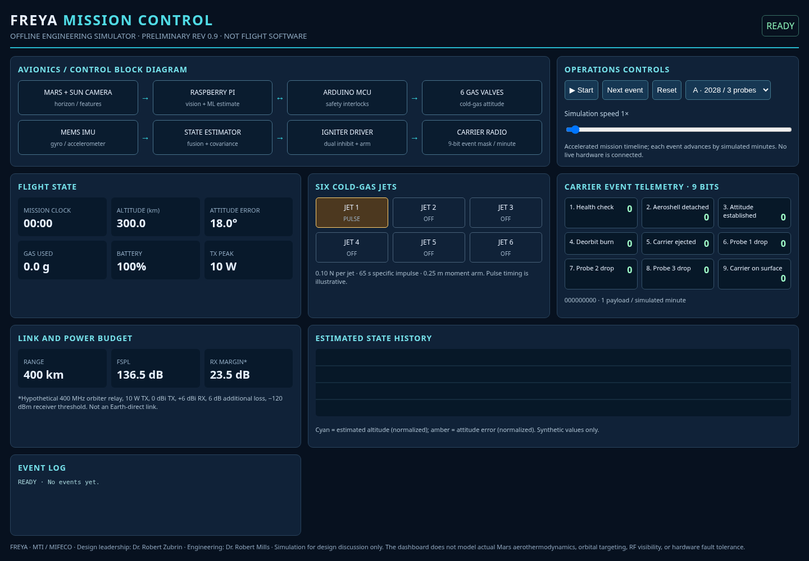
Figure 7B-1. Offline operational simulator at initial state.
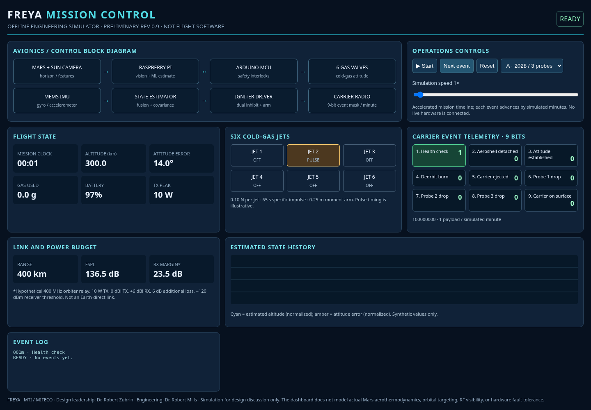
Figure 7B-2. Browser simulator after a single event step.
7B.5.1 Calculated-flight software requirements
The following SIM requirements apply to the Revision 5.1 engineering simulation. They supplement the original 91 source requirements and do not replace flight-system acceptance criteria. Software verification is analysis and executable tests; hardware acceptance still follows Section 9.
SIM-001: The simulation shall show attitude-jet translation away from the second stage and report relative speed, powered duration and clearance time. Trace MIS-003/004 and GNC-05. Verify impulse/translation identity and phase display.
SIM-002: The simulation shall align the heat shield with the reentry trajectory, brake the slew to rest, and fire the main engine retrograde only after alignment. It shall remove cold-gas credit after module discard. Trace GNC-004/006, EDL-05. Verify event ordering and displayed vectors.
SIM-003: The simulation shall report separation and alignment gas separately for A and B, tank initial/usable/residual gas, remaining gas and pressure, with every assumed gas/tank parameter. Trace GNC-008 and MIS-007. Verify gas/pressure mass closure.
SIM-004: The simulation shall search 3–20 elapsed orbits for a target opportunity, report the closest miss, orbit phase and elapsed wait, and explicitly report a tolerance miss or inaccessible latitude. Trace MIS-006 and DER-001. Verify search bounds and unreachable-target tests.
SIM-005: A shall burn the full assumed fixed thrust and impulse, showing duration, evolving mass and velocity. B shall calculate thrust for a selected duration and separate fuel, oxidizer and planning-reserve quantities. Trace GNC-001/005/007 and DER-002. Verify the gravity-free rocket equation, full-impulse identity and mixture mass closure.
SIM-006: The simulation shall plot center and shoulder surface temperatures versus entry time, identify local-radius and material assumptions, and label the preliminary nonablating model. Trace EDL-003, EDL-01/02/03 and DER-003. Verify equilibrium, finite values and time-step refinement; qualified material-response validation remains pending.
SIM-007: The simulation shall retain and expose altitude and velocity at every integration step for carrier and every probe, in a common time frame. It shall remove probe mass from the carrier at release and preserve inherited release position and velocity. Trace PCM-003/007, EDL-008/009 and SYS-002. Verify mass conservation, release continuity, monotonic time and zero-altitude ground interpolation.
SIM-008: The simulation shall provide complete JSON and all-descent CSV exports, physical-time labels, reproducible defaults, source citations and links from the website to this supplement. It shall distinguish the physical clock from compressed presentation playback. Trace SYS-005 and DER-010. Verify exports, configuration switching and document links.
7B.6 Verification gates and engineering limitations
Before hardware selection: verify real mass properties and thruster allocation matrix; test cold-gas impulse bit and tank regulation; assess radiation and thermal survivability of compute and camera; test Sun acquisition and optical blinding; design fail-safe igniter inhibits; complete carrier-to-relay access and waveform agreement; validate RF link over geometry and blackout; complete battery cold-capacity and peak-current testing; and perform trajectory-coupled thermal/aero loads analysis. Do not treat dashboard readouts as measured performance.
8. Engineering calculations and sizing checks
8.1 Orbit and deorbit
For an ideal 300 km circular orbit, v_c = sqrt(mu/r) = 3.407 km/s. A tangential retrograde impulse that produces a 50 km vacuum periapsis requires v_a = sqrt[mu(2/r_a - 1/a)] = 3.347 km/s, or delta-v = 60.3 m/s. This is an illustrative two-body result only: atmospheric drag, lift, navigation uncertainty and an entry corridor are excluded.
8.1.1 Orbit targeting equations and search method
Let r_a=R+300,000 m and r_p=R+50,000 m. Semi-major axis a=(r_a+r_p)/2. Circular speed v_c=sqrt(μ/r_a); retrograde transfer speed v_a=sqrt[μ(2/r_a−1/a)]; required nominal Δv=v_c−v_a=60.272620 m/s. Planning value is 1.25Δv=75.340775 m/s. Orbital period T=2πsqrt(r_a³/μ)=6,804.046036 s. The actual finite burn is propagated rather than instantaneously applying this ideal impulse.
In each orbit interval [j,j+1), j=3…19, sample 720 phases f=k/720. Also evaluate exactly 20 elapsed orbits. Wait=(j+f)T. The solver adds burn/coast/entry angular travel and first-probe downrange to initial argument u0+2πf. With inclination i, latitude φ=asin(sin i sin u); longitude λ=λ0+atan2(cos i sin u,cos u)−ω(wait+t_flight), wrapped to ±180°. First-probe descent downrange is approximated by x/R.
Target miss is great-circle distance d=R acos[sinφ sinφ_target+cosφ cosφ_target cos(λ−λ_target)]. The minimum sampled d is returned even if it exceeds tolerance. A target latitude outside the orbital inclination band is flagged unreachable. Search interval is a user-requested planning assumption, not evidence that 3–20 orbits guarantees a match.
Assumed plane and datum replace actual orbit epoch/RAAN and delivery geometry. No J2 precession, third bodies, maneuver dispersions, three-dimensional winds, crossrange lift or terrain are included. No 95% landing probability or flight corridor compliance can be inferred. The source 100/50 km A/B statistical objectives require a separate 6-DOF Monte Carlo.
| Quantity | A | B |
|---|---|---|
| Selected elapsed orbits | 12.615278 | 6.070833 |
| Ignition wait (h) | 23.8430 | 11.4740 |
| First-probe miss (km) | 9.526 | 8.902 |
| First-probe latitude / longitude (deg) | 0.0622 / 0.1485 | 0.0671 / -0.1347 |
8.2 Propulsion implication
At 20 kg, an impulsive first-order estimate gives required momentum m*delta-v = 1205 N s, before gravity losses, thrust alignment and margins. J-class motors are defined by a total-impulse band of 640 to 1,280 N s. The lower bound is below this ideal estimate; the upper bound is only marginally above it. Thus one J-class motor is not validated for the baseline orbit and entry aimpoint. Real motor thrust-time, dry mass, expelled propellant, specific impulse and integration must be assessed.
8.2.1 Finite engine burn and A/B propellant calculation
At ignition m_burn=m_wet−m_separation−m_slew. Effective exhaust speed v_e=Isp g0. Mass flow is mdot=F/v_e; main propellant consumed=m_burn[1−exp(−Δv/v_e)] [SIM-R4, SIM-R5]. Ideal delivered Δv=v_e ln(m_start/m_end). For A, t_burn=I_total/F and consumed propellant=I_total/v_e. For B, compute nominal propellant then F=m_prop v_e/t_burn. At oxidizer/fuel ratio O/F, fuel=m_prop/(1+O/F), oxidizer=m_prop−fuel.
RK4 integrates inertial Cartesian position, velocity and mass: dr/dt=v; dv/dt=−μr/|r|³−(F/m)v/|v|; dm/dt=−F/(Isp g0). Thrust continuously follows negative velocity, an ideal steering assumption requiring real pointing authority. A solid motor still burns completely. The osculating vacuum periapsis is obtained from cutoff specific energy and angular momentum. The ballistic coast uses only central gravity to the descending 125 km interface.
The planning propellant value is separately computed using 1.25Δv; it is not extra nominal commanded impulse. B additional reserve propellant equals planning demand minus nominal consumed propellant and is assumed carried within the 50 kg wet allocation. A fixed impulse at these defaults reaches entry but does not supply the 25% planning allowance. Hardware selection requires a measured thrust curve, qualified ignition, dispersion, thrust alignment and tank/feed budgets.
| Quantity | A fixed reference | B sized hybrid alternative |
|---|---|---|
| Thrust / duration | 100.000 N / 12.800 s | 232.444 N / 12.800 s |
| Delivered impulse (N s) | 1,280.000 | 2,975.281 |
| Ideal Δv (m/s) | 64.988 | 60.273 |
| Initial / cutoff inertial speed (m/s) | 3,407.063 / 3,342.077 | 3,407.063 / 3,346.793 |
| Main propellant consumed (kg) | 0.580105 | 1.213577 |
| Planning propellant / additional reserve (kg) | 0.670946 / 0.132363 | 1.512338 / 0.298761 |
| Fuel / oxidizer consumed (kg) | Solid blend unspecified | 0.242715 / 0.970862 |
| Achieved vacuum periapsis (km) | 31.334 | 50.001 |
| Coast after cutoff (s) | 1,954.532 | 2,065.178 |
| Entry speed / flight-path angle | 3,510.766 m/s / -2.0639 deg | 3,515.255 m/s / -1.8420 deg |
| Entry mass after module discard (kg) | 17.689910 | 45.556439 |
8.3 Entry heating and structure
The 600 mm aluminum upper shell must not be assumed safe because Mars has a thin atmosphere. Perform coupled trajectory, CFD/engineering aerothermal, radiation, ablation and conduction analysis. Specify a maximum allowable aluminum temperature only after alloy/temper and joint selection. The 70 mm shoulder transition and upper-shell exposure require explicit local heat-flux evaluation.
8.3.1 Entry and center/shoulder temperature calculation
Entry uses radial state [r,θ,v_r,v_t], with zero lift. Atmospheric relative tangential speed w_t=v_t−ωr cos i; V=sqrt(v_r²+w_t²). Drag acceleration D=ρV² Cd A/(2m), with A=πD_shell²/4 and Cd=1.5. Equations: rdot=v_r; θdot=v_t/r; v_rdot=v_t²/r−μ/r²−D v_r/V; v_tdot=−v_r v_t/r−D w_t/V. Density is the explicit exponential assumption in 3.1. Inertial speed and air-relative speed are retained separately.
Stagnation-region convective heat flux is q_c=1.9027×10^−4 sqrt(ρ/R_n) V³ W/m², with SI density, radius and speed. The Sutton–Graves functional form comes from [SIM-R6]; the Mars coefficient is used as in the SHERPA engineering model [SIM-R7]. This is a preliminary correlation, extrapolated by the software outside hypersonic conditions without a flow-regime switch; rarefied/low-speed validity is not established. Updated Mars correlations are described in [SIM-R8] but are not implemented. Their published accuracy is not an uncertainty bound for this simulator.
Shoulder heat flux q_s=q_c f_s sqrt(R_n/R_s), with f_s=0.45, R_n=0.20 m and R_s=0.07 m. This correction is an assumed shoulder-flow proxy. A 70 mm contour radius alone cannot predict the actual shoulder distribution. Both center and shoulder require CFD and material-response analysis.
Each location has a surface node T_s and backing node T_b. Areal capacities C_s=ρ_TPS cp δ_s and C_b=ρ_TPS cp(L−δ_s). Conductance G=k/(L/2). Surface equation: C_s dT_s/dt=q−εσ(T_s^4−T_env^4)−G(T_s−T_b). Backing equation: C_b dT_b/dt=G(T_s−T_b). σ=5.670374419×10^−8 W/(m² K^4); initial/environment T=210 K. Plot temperature is T_s−273.15 °C. Radiation here is outward surface emission; incoming shock-layer radiation is omitted.
No ablation, pyrolysis, recession, temperature-dependent properties, bondline/shell model, gas radiation or structural coupling is included. Backing nodes are generic thermal lumps, not certified bondline temperatures. A real ablative TPS needs the validated material response and flight/test evidence exemplified by [SIM-R9]. Neither peak surface temperature nor these generic properties constitutes a TPS material selection or acceptance limit.
| Preliminary result | A | B |
|---|---|---|
| Peak center surface (°C) | 752.63 | 879.75 |
| Peak shoulder surface (°C) | 680.29 | 800.79 |
| Peak center convective flux (kW/m²) | 57.422 | 88.640 |
| 125 km to extraction time (s) | 723.956 | 840.966 |
| 10 km inertial / air-relative speed (m/s) | 355.066 / 200.332 | 591.466 / 403.187 |
8.4 Parachute descent screening
Using v_t = sqrt[2mg/(rho Cd A)], rho=0.015 kg/m^3, Cd=0.75 and Mars g=3.71 m/s^2, a 2 kg probe on a 0.50 m diameter chute gives approximately 82 m/s terminal speed. A 20 kg suspended load on a 1.50 m chute gives approximately 86 m/s. These speeds are too high to infer safe deployment or impact survival without a coupled chute/ballistic/penetration design. The actual suspended mass is not the full spacecraft at every phase.
8.4.1 Time-resolved carrier and probe descent
At extraction the carrier inherits entry radial velocity and the tangential velocity relative to the corotating atmosphere. The local model uses flat coordinates x,h with state [x,h,vx,vy]. Let relative air velocity w=[vx−wind,vy], speed |w|, ρ=ρ0 exp(−h/H), and effective drag area C_A. Then xdot=vx, hdot=vy, vxdot=−ρ C_A |w|(vx−wind)/(2m), vydot=−μ/(R+h)²−ρ C_A |w|vy/(2m). Curvature and Coriolis acceleration are omitted after extraction.
Carrier mass=m_dry+N_remaining m_probe. Effective carrier C_A=0.4×0.12 m²+Cd πD_carrier²/4 ×f_inflate. The first term is a fixed assumed carrier body Cd-area product. Carrier inflation fraction=max[0,min(1,(t−1 s)/2 s)]. For a probe, C_A=0.45π(0.05 m)²/4+Cd πD_probe²/4 ×f_inflate, where f_inflate ramps over 2 s after 1.5 s delay. Canopy area increases linearly, with no separate opening-shock or supersonic inflation model.
First release occurs when the carrier crosses 5,000 m; later releases are two seconds apart. Each probe inherits exactly the carrier position and velocity at its release, then integrates independently. Carrier mass drops by 2 kg per release. No artificial sequencing waits for one probe to land before releasing the next. Carrier and probe clocks share t=0 at carrier extraction; absolute mission time is added in exports.
Altitude is above an assumed zero-elevation flat ground datum. Total ground-relative speed=sqrt(vx²+vy²), downward speed=−vy; horizontal speed=vx. Every nominal 0.25 s RK4 output is retained, including shortened release/ground event steps. Ground intersection is interpolated to h=0. The UI paginates every row and exports all entities to CSV; full JSON also retains burn, entry, temperatures, targeting and parameters.
Default deployment heights are assumptions, not verified release gates. Carrier starts at approximately 200 m/s air-relative for A and 403 m/s for B; Mach, inflation loads and canopy survival are not checked. Impact speeds near 85 m/s do not imply safe landing, stable attitude, penetration depth, successful sampling or instrument survival. DER-004/005 and EDL-004 remain open.
| Quantity | A | B |
|---|---|---|
| Loaded / empty carrier mass (kg) | 9.00 / 3.00 | 22.00 / 8.00 |
| Carrier descent duration (s) | 179.788 | 146.694 |
| First / last probe release after extraction (s) | 50.836 / 54.836 | 46.609 / 58.609 |
| First probe release-to-ground (s) | 55.568 | 54.092 |
| First / last probe impact speed (m/s) | 85.500 / 85.331 | 85.587 / 85.099 |
| Carrier output samples | 721 | 589 |
8.5 Ballistic coefficient
At 0.80 m diameter, frontal area is 0.503 m^2. With assumed hypersonic Cd=1.5, ballistic coefficient beta=m/(Cd*A) is approximately 26.5 kg/m^2 for A at 20 kg and 66.3 kg/m^2 for B at 50 kg. These are preliminary inputs, not aerodynamic coefficients from CFD.
8.6 Mass accounting
A: 20.0 kg at burn minus three 2.0 kg probes = 14.0 kg for shell, TPS, carrier, parachutes, avionics, propulsion, controls and interfaces. B: 50.0 kg per vehicle minus seven 2.0 kg probes = 36.0 kg for all other hardware. The earlier 15 kg aeroshell statement must be defined as a system mass or reconciled with the A total; it cannot simultaneously mean 15 kg of shell alone and a 20 kg complete vehicle with 6 kg probes.
9. Verification, qualification and acceptance
For each requirement, the verification matrix shall record: requirement ID; parent objective; configuration A/B; owner; design artifact; method (analysis, test, inspection or demonstration); acceptance threshold; planned milestone; evidence reference; and pass/fail disposition. Numerical assumed acceptance limits must be validated and formally baselined before Preliminary Design Review (PDR).
DER-001 [Both] The program shall produce a 6-DOF Mars orbit-to-surface trajectory Monte Carlo, including atmospheric dispersions, prior to propulsion selection. Verification: Analysis.
DER-002 [A] The propulsion design shall demonstrate delivered delta-v and pointing error with a 20 kg initial mass and explicit propulsion margin. Verification: Analysis + test.
DER-003 [Both] The aeroshell shall have a validated coupled aerothermal and structural model including 600 mm upper shell, aluminum thermal limits, and 70 mm transition. Verification: Analysis + test.
DER-004 [Both] The descent system shall meet qualified deployment Mach, dynamic-pressure, altitude and inflation-load limits; nominal chute diameters alone are not acceptance criteria. Verification: Analysis + test.
DER-005 [Both] Each probe shall meet defined impact speed, attitude, penetration-depth and survival envelopes over specified soil/ice conditions. Verification: Test.
DER-006 [Both] The navigation system shall quantify covariance and observability across periods without camera or Sun visibility. Verification: Simulation + test.
DER-007 [B] Each life-detection measurement shall have documented blanks, contamination budgets, calibration, detection limits and false-positive controls. Verification: Test + review.
DER-008 [Both] The spacecraft shall demonstrate positive power and communication margins for the selected operating duration and geometry. Verification: Analysis + test.
DER-009 [Both] The program shall approve an end-to-end planetary protection implementation plan before hardware exposure to flight environments. Verification: Review.
DER-010 [Both] A complete requirement verification matrix shall define objective pass/fail criteria, owners and evidence for every MIS/STR/GNC/EDL/PCM/PRB/SYS/DER item. Verification: Inspection.
9.1 Simulation verification evidence and unresolved gates
Executed checks: paired-jet translation impulse and rest-to-rest rotation; gas/tank mass closure; gravity-free finite-burn agreement with the ideal rocket equation; A full-impulse identity; B fuel-plus-oxidizer closure; 3–20-orbit bounds and unreachable-latitude rejection; no-input thermal equilibrium; finite entry states; release position/velocity continuity; carrier mass removal; monotonic probe time; and ground interpolation.
Time-step refinement compares the nominal entry/descent 0.25 s steps with 0.125 s. Acceptance for software consistency is <2 °C change in peak center temperature and <0.2 m/s change in first-probe impact speed for each default A/B case. These checks verify implementation consistency, not physical accuracy. Baseline outputs are reproducible from flight-model.mjs and saved flight_baseline_A/B.json; the offline HTML contains the same model.
Before flight-design use: obtain host state/epoch and separation limits; fit qualified motor thrust curves; model pointing/dispersions and navigation covariance; complete real-gas/regulator/P&ID and pressure-vessel budgets; replace the assumed atmosphere with site/season ensembles; run 6-DOF targeting and stability; qualify canopy Mach/q/inflation loads and release clearance; validate center/shoulder CFD heating and ablative material response; close component masses; and qualify impact/sample performance. Existing Rev09 verification requirements remain open.
10. Design risks, limitations and review actions
Mass reconciliation: 15 kg aeroshell versus 20 kg at burn versus earlier 16 kg precursor allocation. Three 2 kg probes leave only 14 kg of a 20 kg total for every other element.
Propulsion feasibility: a J-class motor has a class impulse range, not a guaranteed Mars deorbit delta-v; select an actual motor only after orbit and entry-corridor analysis.
Atmospheric entry: the 600 mm aluminum backshell and 70 mm transition require CFD, stability and coupled TPS/structure thermal analysis; thin atmosphere does not eliminate heating.
Descent: 1.5 m and 2.0 m parachutes and 0.5 m probe chutes are unverified in the Mars atmosphere; evaluate supersonic/subsonic opening and ballistic coefficient.
Carrier packaging: seven 200 x 50/75 mm probes, vertical channels, parachute, avionics and cover-extraction stroke require a dimensioned 3D fit check.
Navigation: a single camera cannot guarantee continuous absolute orbit knowledge or Sun visibility; quantify observability and determine if radiometric navigation or additional sensors are needed.
Science: sample acquisition, chamber filling, heating effects, contamination controls, analytical detection limits, power and communication architecture remain unallocated.
Program interfaces: confirm 120 kg rideshare allocation, exact upper-stage orbital delivery, separation conditions, planetary protection authority and 2031 versus 2032 launch window.
Approve 20 kg A and 50 kg per B vehicle as working design masses, or revise after bottom-up estimates.
Clarify whether 15 kg denotes aeroshell assembly, total post-burn entry vehicle, or another subsystem.
Confirm 2031 launch opportunity and whether 2032 is an alternate mission window.
Confirm whether 120 kg rideshare allowance includes adapters, both vehicles, cruise support and separation systems.
Select trajectory target, acceptable landing region, and orbital delivery state before freezing deorbit propulsion.
Select science sample depth, contamination threshold, operating life and communication relay architecture.
No numerical field is intentionally left unassigned. Unverified quantities are labeled assumed, proposed, or qualification-dependent rather than presented as established performance.
The B solid-motor baseline follows A in architecture, not in motor count: scaling the 20 kg vehicle to 50 kg requires roughly 2.5 times the momentum-equivalent deorbit impulse at the same delta-v.
The A J-class motor remains an unresolved feasibility risk even at 20 kg; neither A nor B is propulsion-qualified by the preliminary two-body calculation.
Parachute nominal diameters are geometric allocations, not evidence of a safe Mars terminal speed. Probe penetration loads, upper-shell thermal exposure, landing dispersion, planetary protection and relay access remain verification gates.
No assumed performance value constitutes approval for flight, and all values are subject to engineering change control after analysis and test.
11. Design basis and references
FREYA project decisions and design updates, 1–9 November 2026; latest November 9 configuration takes precedence.
FREYA Mission Design Justification and Trade Study, prior project artifact; older concepts treated as historical where superseded.
NASA Systems Engineering Handbook, NASA/SP-2016-6105 Rev 2, requirements quality and verification guidance: https://www.nasa.gov/reference/system-engineering-handbook-appendix/
NASA Planetary Protection Handbook (2024), Mars Category IV distinctions: https://sma.nasa.gov/sma-disciplines/planetary-protection
NASA Mars 2020 mission overview, EDL context: https://www.jpl.nasa.gov/news/press_kits/mars_2020/launch/mission/
Engineering caution: requirements labeled Established are project-level decisions, not demonstrated feasibility or external partner commitments. Proposed requirements require MTI approval. No CFD, trajectory, delta-v, structural or parachute qualification calculation has yet been completed in this specification.
Project-source facts are identified in Sections 1-6 as Established; new numerical values in Sections 7-11 are assumptions or derived engineering estimates. Mars constants are standard rounded reference values. J-class impulse limits are the conventional model-rocket motor classification; they do not establish the performance of a specific motor. Planetary protection category and requirements must be confirmed with the relevant mission authority. This document is not a flight safety certification.
11.1 Simulation sources and calculation provenance
References below are additional to the original Section 11 citations. In-text SIM-R identifiers identify the supporting relation or project authority. Numerical trade assumptions remain identified in 3.1; a NASA citation does not validate a FREYA-specific choice. Source illustrations and original references remain unchanged.
[SIM-R1] FREYA design leadership: Robert Zubrin and Robert Mills. FREYA Mission Vehicle Design Specification, FDS-001 Revision 0.9, 10 November 2026. User-supplied DOCX; governing project source. Sections 3–9 and Appendix D. https://chatgpt.com/library?file_id=libfile_a103c82d897c8191ada94ed38925bc53&account_id=personal
[SIM-R2] FREYA project user. Simulation direction, 15 November 2026, this FREYA project conversation: attitude-jet separation, shield-forward retrograde burn, gas/tank budget, 3–20 orbits, A/B thrust/fuel, temperature and descent telemetry. Internal design instruction; no public URL.
[SIM-R3] FREYA. FREYA Pitch Expanded Science Three Categories, 10-slide user-provided presentation, file FREYA_Pitch_Expanded_Science_Three_Categories.pptx, undated. Slide 7 delivery phases; slides 3–4 proposed science alternatives. Internal project artifact; no public URL.
[SIM-R4] NASA Glenn Research Center. Specific Impulse. Beginner’s Guide to Aeronautics, undated webpage. Relations between thrust, impulse, mass flow and specific impulse. Accessed 15 November 2026. https://www1.grc.nasa.gov/beginners-guide-to-aeronautics/specific-impulse/
[SIM-R5] NASA Glenn Research Center. Ideal Rocket Equation. Beginner’s Guide to Aeronautics, undated webpage. Variable-mass rocket sizing relation. Accessed 15 November 2026. https://www1.grc.nasa.gov/beginners-guide-to-aeronautics/ideal-rocket-equation/
[SIM-R6] Sutton, K., and Graves, R. A., Jr. A General Stagnation-Point Convective Heating Equation for Arbitrary Gas Mixtures. NASA Technical Report NASA-TR-R-376, November 1971. NTRS document 19720003329. Accessed 15 November 2026. https://ntrs.nasa.gov/citations/19720003329
[SIM-R7] Esper, Jaime, and Aldrin, Buzz. Mars Small-Spacecraft Human Exploration Resource Prospector with Aero-braking (SHERPA): Demonstrating an End-to-End Mission to Phobos Distant Retrograde Orbit. NASA-hosted manuscript, NTRS document 20190032243. Engineering Mars convective heating coefficient; no FREYA validation. Accessed 15 November 2026. https://ntrs.nasa.gov/api/citations/20190032243/downloads/20190032243.pdf?attachment=true
[SIM-R8] West, Thomas K., IV, and Brandis, A. M. Updated Stagnation-Point Aeroheating Correlations for Mars Entry. Journal of Spacecraft and Rockets 57(2), 2020. DOI 10.2514/1.A34602. NTRS document 20200003079. Context for required improved correlations; not implemented here. Accessed 15 November 2026. https://ntrs.nasa.gov/citations/20200003079
[SIM-R9] Meurisse, Jeremie B. E.; Monk, Joshua D.; Borner, Arnaud; Ferguson, Joseph; Panerai, Francesco; and Mansour, Nagi N. Towards the Prediction of the Mars 2020 Heatshield Material Response. Ablation Workshop, Burlington, Vermont, 17–18 September 2018. NASA report ARC-E-DAA-TN61346, NTRS document 20190003886. Context for material-response validation; no material constants borrowed. Accessed 15 November 2026. https://ntrs.nasa.gov/citations/20190003886
[SIM-R10] NASA Glenn Research Center. Mars Atmosphere Equation (Metric). Beginner’s Guide to Aeronautics, undated webpage. Reviewed atmosphere context; its piecewise temperature profile is not implemented or extrapolated by this simulator. Accessed 15 November 2026. https://www1.grc.nasa.gov/beginners-guide-to-aeronautics/mars-atmosphere-equation-metric/
[SIM-R11] NASA Glenn Research Center. Rocket Thrust Equation. Beginner’s Guide to Aeronautics, undated webpage. Reviewed thrust and mass-flow relation. Accessed 15 November 2026. https://www1.grc.nasa.gov/beginners-guide-to-aeronautics/rocket-thrust-equation/
[SIM-R12] NASA Jet Propulsion Laboratory, Solar System Dynamics. Astrodynamic Parameters, webpage. Reviewed reference-parameter context; simulator retains the rounded Rev09 screening constants and an assumed rotation period. Accessed 15 November 2026. https://ssd.jpl.nasa.gov/astro_par.html
Implementation provenance: src/flight-model.mjs (physics), src/flight-ui.mjs (plots/physical playback), test/flight-model.test.mjs (independent identities and consistency checks), data/revision51/flight_baseline_A.json and flight_baseline_B.json (default complete outputs), and data/revision51/simulation_spec_sections.json (this shared supplement). All quantities use SI internally; output temperatures are °C and elapsed times are seconds. Full citations and URLs are included here so the engineering basis can be reviewed offline.
12. Illustration and drawing register - Revision 0.9
This section incorporates precursor reference figures. The two approved 2031 configuration illustrations are embedded in Appendix D.
| Figure | Source | Authority |
|---|---|---|
| F-01 | FREYA_Entry_One_Page_Infographic.pdf / p.1 | Current geometry |
| F-02 | FREYA_600mm_Geometry_and_Orbital_Heating.pdf / p.1 | Current geometry |
| F-03 | FREYA_Precursor_Vehicle_Report.pdf / p.1 | Historical supporting |
| F-04 | FREYA_Mission_Design_Justification_Trade_Study.pdf / p.7 | Historical supporting |
| F-05 | FREYA_Mission_Design_Justification_Trade_Study.pdf / p.9 | Historical supporting |
Figure F-01. Current 600 mm geometry infographic
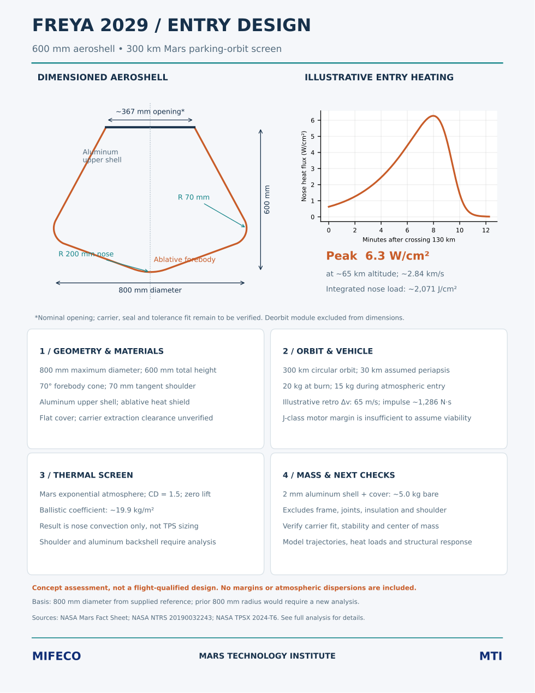
Current geometry reference. Dimensions are conceptual and should be checked against the mechanical CAD model.
Source: FREYA_Entry_One_Page_Infographic.pdf, page 1.
Figure F-02. 600 mm aeroshell geometry and entry concept
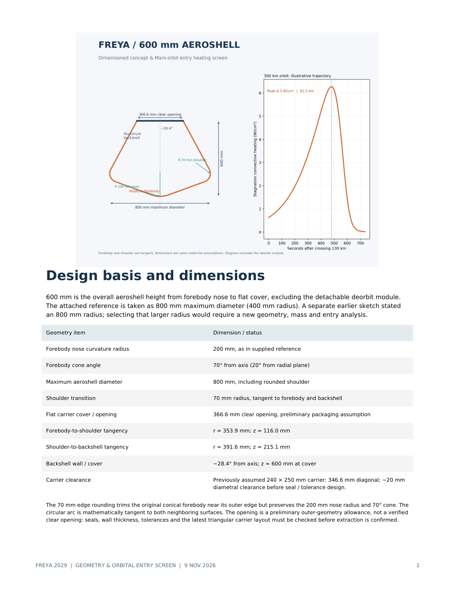
Latest 600 mm aluminum backshell and ablative forebody reference. The source sheet was created before the late-2028 schedule correction.
Source: FREYA_600mm_Geometry_and_Orbital_Heating.pdf, page 1.
Figure F-03. Precursor vehicle architecture, deployment sequence, and exploded assembly (two supplied illustrations)
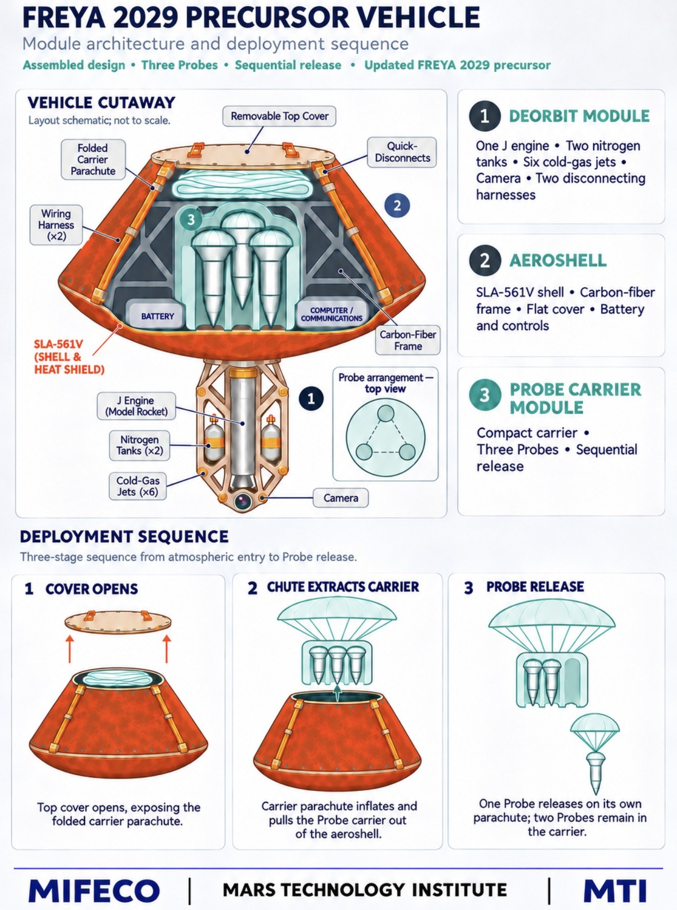
Two user-supplied historical 2029 illustrations. The current precursor schedule is late 2028; earlier subsystem labels and configurations in these source illustrations are not controlling design requirements.
Source: User-provided FREYA precursor vehicle cutaway and exploded concept illustrations.
Source: FREYA_Precursor_Vehicle_Report.pdf, page 1.
Figure F-04. Entry geometry trade-study drawing
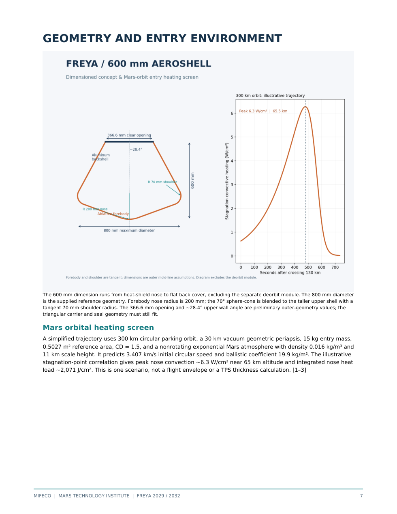
Supporting earlier design trade-study figure; consult the 600 mm geometry sheet for current dimensional baseline.
Source: FREYA_Mission_Design_Justification_Trade_Study.pdf, page 7.
Figure F-05. Sensitivity trade-study graphics
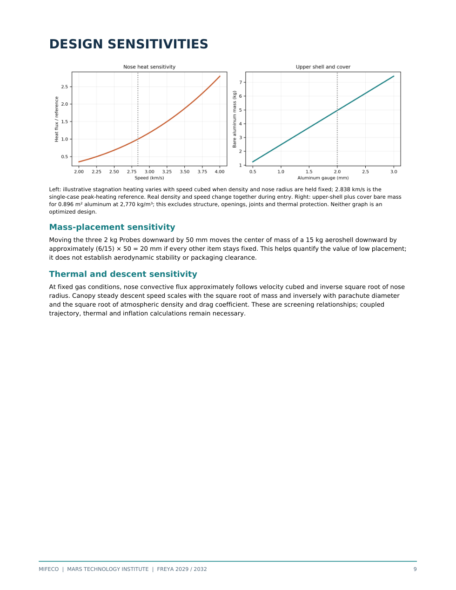
Earlier sensitivity plots; illustrative only, not a validated 2028/2031 prediction.
Source: FREYA_Mission_Design_Justification_Trade_Study.pdf, page 9.
13. Configuration B illustration register and limitations
| A reference | B companion | Design subject |
|---|---|---|
| F-01 | B-01 | Geometry infographic |
| F-02 | B-02 | Aeroshell / exploded arrangement |
| F-03 | B-03 | Mission sequence |
| F-04 | B-04 | Entry geometry trade |
| F-05 | B-05 | Sensitivity graphics |
Illustration control: Appendix D contains only the two user-approved 2031 illustrations. Earlier 2031 artwork and superseded companion engineering figures have been removed. Configuration B remains conceptual and requires mechanical, thermal, and propulsion validation.
Appendix C - Source Photorealistic Figures
Original user-provided FREYA illustrations. These are preserved as supplied, including historical dates and superseded subsystem labels; see current configuration requirements for governing values.
Source Figure S-01: External assembled vehicle
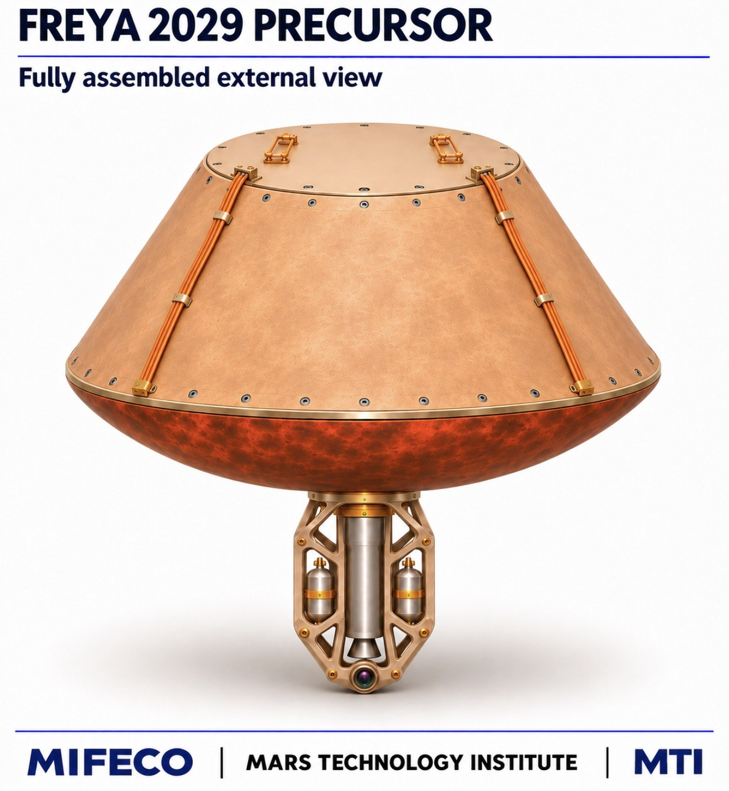
Historical source artwork; not an approved current engineering drawing.
Source Figure S-02: Vehicle cutaway and deployment sequence

Historical source artwork; not an approved current engineering drawing.
Source Figure S-03: Exploded assembly and release insets
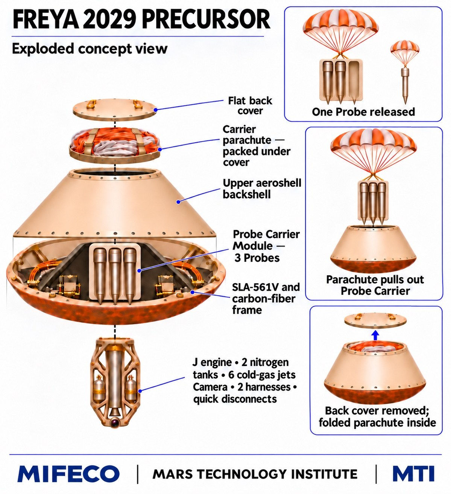
Historical source artwork; not an approved current engineering drawing.
Source Figure S-05: Precursor mission infographic
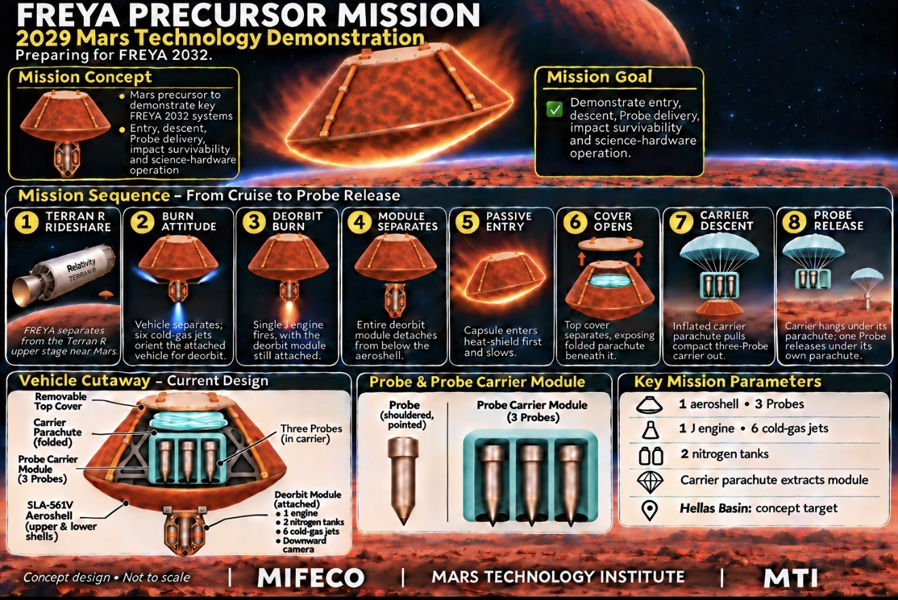
Historical source artwork; not an approved current engineering drawing.
Source Figure S-06: Earlier schematic architecture
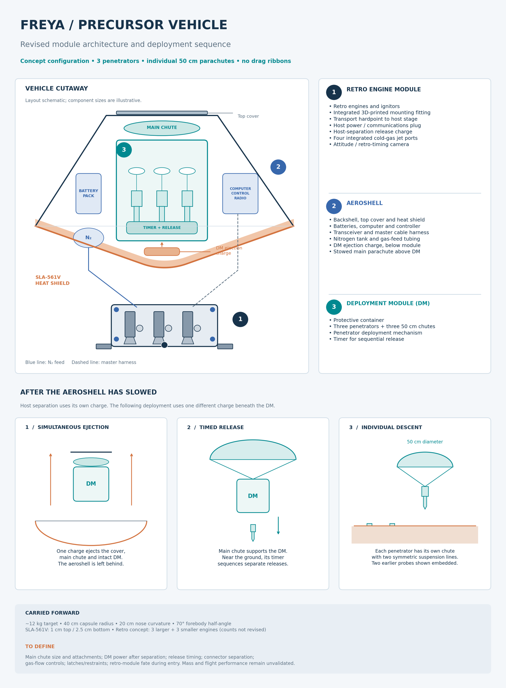
Historical source artwork; not an approved current engineering drawing.
| Mission configuration | 2031 Full Science Mission (B) |
|---|---|
| Aeroshell vehicles | 2 |
| Probes | 7 per vehicle; 14 total |
| Probe mass | 2.00 kg each |
| Aeroshell diameter | 800 mm (assumed) |
| Aeroshell total height | 600 mm (assumed) |
| PCM parachute | 2.0 m per vehicle (assumed) |
| Individual probe chute | 0.50 m (assumed) |
| Upper shell | Aluminum (assumed) |
| Lower heat shield | Ablative SLA-561V concept |
Appendix D - FREYA 2031 Configuration B
Approved 2031 illustrations (replacing all earlier 2031 figures). Two vehicles, seven clustered probes per vehicle, with an external hybrid deorbit module. Illustrations are conceptual and not dimensioned flight drawings.
D-01 | FREYA 2031 Mission - Flight Sequence and Configuration B
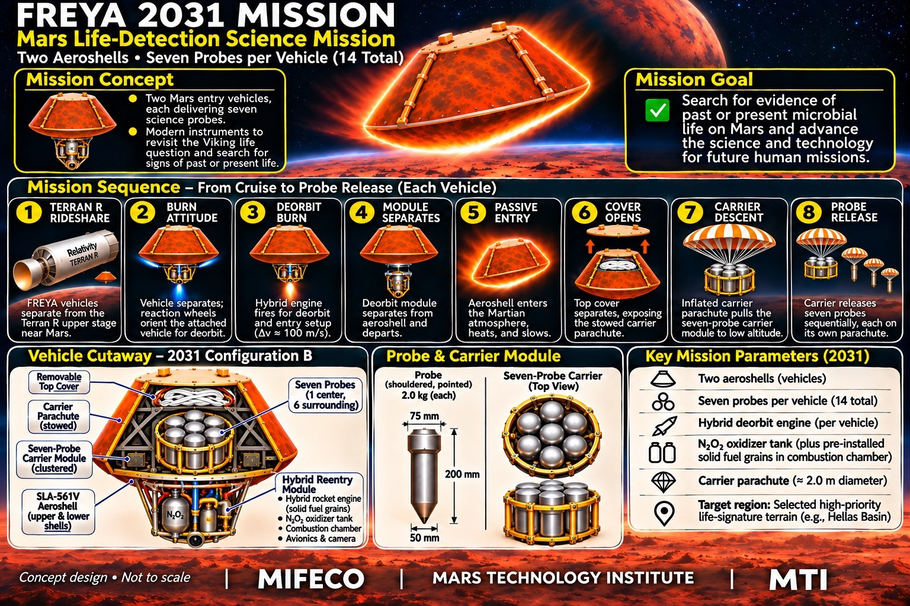
User-approved illustration. Concept design; not to scale.
D-02 | FREYA 2031 Vehicle Architecture and Deployment Sequence
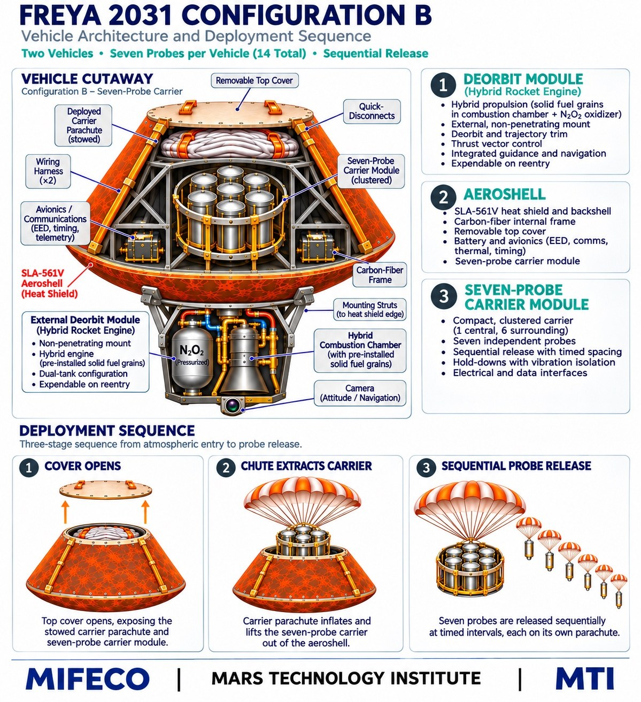
User-approved illustration. Concept design; not to scale.
8.4.2 Live mission trades and preliminary ground-impact calculation
The main mission review now maps each phase onto the calculated flight clock. Long orbital waits are compressed. Carrier and all probes share a common physical time; their releases and descents overlap. Review-event focus and latched status confirmations are scripted review markers, not a new sensor model. The calculated-flight panel retains its independent physical playback clock. Discarded capsule altitude, speed and load are unavailable rather than extrapolated beyond extraction; its last calculated surface temperatures are retained.
The panel displays all 13 labeled positions: 0 health check, 1 host separation, 2 attitude confirmation, 3 burn confirmation, 4 carrier extraction, 5–7 probe 1–3 release, 8 carrier landing, and 9–12 probe 4–7 release. Source A transmits nine bits and shows the B-only positions as N/A. Source B transmits all 13. These are simulated latched confirmations, not live hardware telemetry.
Capsule proper load is thrust/mass/g0 during the main burn and q Cd A/mass/g0 during entry. Orbital free fall reads zero proper load. Chute loads use relative-air dynamic pressure and the instantaneous canopy inflation fraction. Capsule speed is inertial before discard; descent speeds are ground-relative. Grounded objects show zero current speed and retain a separate at-impact speed. Each probe can be selected; the expanded table shows all probes at the same mission time.
Ground-impact screening uses the Poncelet functional form F(v)=a+b v² [SIM-R13]. Let A=π D²/4, a=A R, b=0.5 ρ Cd A, and v=|vertical velocity| cos(θ), where θ is an additional assumed obliquity. For positive a,b: penetration z=m/(2b) ln(1+b v²/a), initial peak deceleration=(a+b v²)/(m g0), mean deceleration=v²/(2 z g0), and stopping time=m/√(ab) atan(v√(b/a)). For b=0 use z=m v²/(2a) and t=m v/a. Zero speed gives zero impact outputs. The model neglects gravity over the short impact, rebounding, crushing, fracture and changing contact geometry.
The table is pending before release. During descent it evaluates hypothetical impact at the current downward velocity; after landing it retains the actual modeled pre-impact downward velocity. The predicted eventual descent impact speed is separately labeled. Plots sweep downward input velocity from 0 to 200 m/s; obliquity is applied inside the model. Depth exceeding the 0.20 m body length is explicitly flagged as an extrapolation. No survival or hardware shock response is inferred.
Effective bearing resistances 0.2, 3 and 25 MPa and material densities/inertial coefficients below are exploratory assumptions, not measured Mars soil properties or values extracted from the cited reports. R is effective resistance rather than unconfined compressive strength. NASA/USGS supports the force-law context; Sandia provides penetration-calibration context [SIM-R14]. The Sandia empirical equation is not implemented. Laboratory drop/penetration tests and site-specific material characterization are required for qualification.
Mission, flight and material inputs have paired sliders and numeric fields. Rev09 values initialize source-controlled mass, geometry, orbit and canopy inputs; supplemental flight and material values remain labeled assumptions. Restore mission/flight defaults and restore impact assumptions are separate actions. Invalid flight solutions suppress live results. Exported scenario JSON includes the complete flight and impact assumptions.
| Input | Source default or assumption |
|---|---|
| Geometry | Effective impact diameter 0.050 m; body length 0.200 m: Rev09 main body. Shoulder diameter 0.075 m is not used as the contact diameter. |
| Soft sand | Assumed R=0.20 MPa; ρ=1600 kg/m³; inertial Cd=0.8. |
| Hard soil | Assumed R=3.00 MPa; ρ=2000 kg/m³; inertial Cd=1.0. |
| Sandstone | Assumed R=25.00 MPa; ρ=2300 kg/m³; inertial Cd=1.2. |
| Impact posture | Additional obliquity 0°; downward-speed screen; horizontal energy excluded. |
| Entry drag trade | Default Cd=1.5. Additional slider changes entry drag, deceleration, thermal history and subsequent descent initial state. |
| Display changes | Entry steps 10–12 supersede prior entry flips: a continuous space-to-Mars curve supplies capsule position and local tangent. The heat-shield outward normal follows that tangent; its plane is perpendicular to descent. Other requested orientations remain. Step slider is directly below animation. Display geometry does not change flight equations. |
Full references
[SIM-R13] Moore, H. J. (1970). Estimates of the Mechanical Properties of Lunar Surface Using Tracks and Secondary Impact Craters Produced by Blocks and Boulders. USGS Interagency Report: Astrogeology 22. NASA contract R-66. July 1970. Poncelet resistance context; no Mars parameter calibration. Accessed 16 November 2026. https://ntrs.nasa.gov/api/citations/19700031586/downloads/19700031586.pdf
[SIM-R14] Sandia National Laboratories (1997). Penetration Equations. SAND97-2426. 1 October 1997. DOI: 10.2172/562498. Calibration context only; empirical Sandia equation is not implemented. Accessed 16 November 2026. https://www.sandia.gov/research/publications/details/penetration-equations-1997-10-01/
Rev09 requirement evidence assessment
The original requirement text and verification methods above are preserved. The current website adds a baseline evidence assessment for all 91 source requirements, with successful numerical subchecks, explicit shortfalls, analogous flight demonstrations, complete primary references and remaining FREYA verification gaps. Inputs and scripted attitudes are not treated as independent proof. No requirement is declared fully verified.
Read the complete 91-item evidence register and reference list · Download CSV · Download JSON with numerical results and provenance